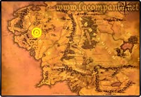

Hobbiton
Pueblo de la Cuaderna del Oeste de la Comarca, al norte del Gran Camino del Este junto a El Agua. Allí se encontraba también el Molino de los Arenas, que bajo el dominio de Zarquino y de los Sacovilla-Bolsón fue transformado para funcionar con vapor. En el camino que llevaba al cercano Delagua estaba la posada «La Mata de Hiedra». El agujero más confortable era Bolsón Cerrado en la Colina, un pequeño montículo al noroeste del centro de la población. Allí habitaron Bilbo y Frodo Bolsón; más tarde también los Sacovilla- Bolsón.
Rivendell
En élfico «Imladris». La fortaleza de Elrond junto al río Sonorona, situada en un valle profundo de las tierras occidentales al pie de las Montañas Nubladas. A menudo la llamaban la Casa de Elrond o la Última Casa. Aunque de exterior modesto y difícil de encontrar, era más bien una pequeña ciudad o población en la que habitaban un buen número de Elfos (Noldor y Sindar) y donde se podían recibir muchos huéspedes.
Erebor

Sindarin «La Montaña Solitaria». Se alzaba, sola, en la llanura al este del Bosque Negro y al norte del Lago Largo. Aquí se establecieron los enanos de Moria, después de que el Balrog los expulsara. Thráin I fundó «el Reino bajo la Montaña» (1999 T.E.), aunque, poco después, los reyes de la Línea de Durin trasladaron su sede más al norte, a las Montañas Grises. Thrór volvió a Erebor en el año 2590 y se hizo rico y poderoso en alianza con los Reyes de Valle (la ciudad de Valle se encontraba justo al pie de Erebor). En el año 2770 el palacio de los enanos construido en lo más profundo de la montaña fue conquistado por Smaug, el dragón que escupía fuego. Todos los enanos que vivían allí murieron o huyeron, igual que los hombres de Valle. Alrededor de la montaña todo quedó carbonizado y desolado. Entonces Smaug penetró en la gran cámara de los tesoros, amontonó todas las preciosidades y se echó encima. Así lo encontró el «ladrón profesional» Bilbo Bolsón setecientos años después (2941 T.E.), cuando Thorin Escudo de Roble y su compañía de enanos recuperaron el reino de las garras del dragón.
Mordor
«Tierra Tenebrosa». Al sudeste de la Tierra Media, donde Sauron reunió sus fuerzas a partir del año 1000 S.E. Por el norte, el oeste y el sur la rodean enriscadas y empinadas cordilleras montañosas. El nordeste, la Meseta de Gorgoroth, era el territorio principal y centro de poder del país: una inmensa llanura resquebrajada, surcada por cavidades de escoria y ceniza, y reptando a ras de suelo, las enormes nubes humeantes que expulsaba el Monte del Destino. Las instalaciones militares más importantes se encontraban junto a Minas Morgul y en el Valle de Udûn detrás de Morannon, en el ángulo entre los Montes de Ceniza y los de la Sombra. En un saliente meridional de los Montes de Ceniza se alzaba Barad-dûr, la fortaleza de Sauron, que abandonaba muy rara vez.
Así era la parte de Mordor que llegaron a conocer Frodo y Sam en su marcha al Monte del Destino. De las demás regiones de Mordor no sabemos casi nada. El nordeste era un árido desierto y se llamaba Lithlad (Sindarin «Llanura de Ceniza»). El sur llevaba el nombre de Nurn y tenía que proporcionar víveres para las huestes de Sauron.